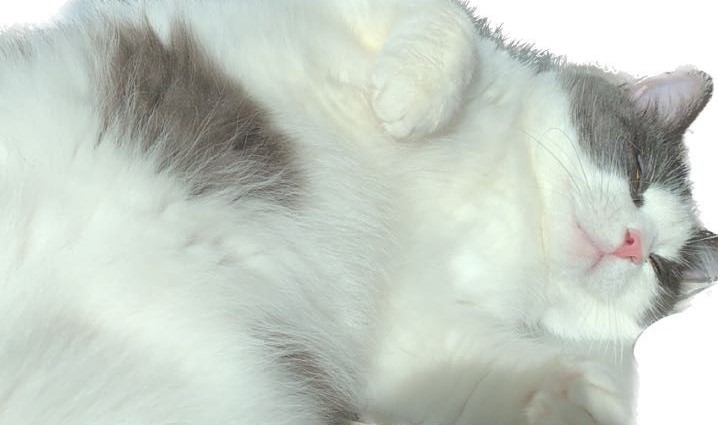
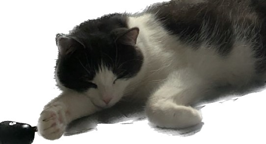
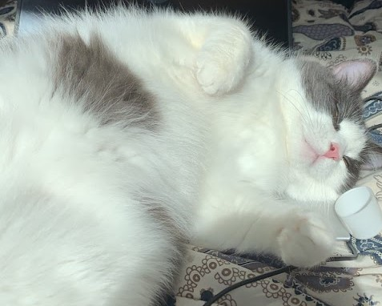
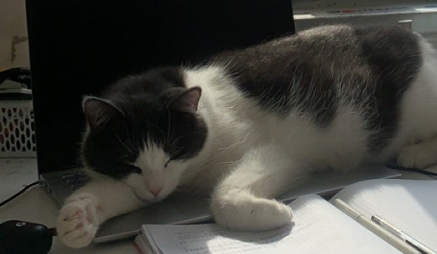
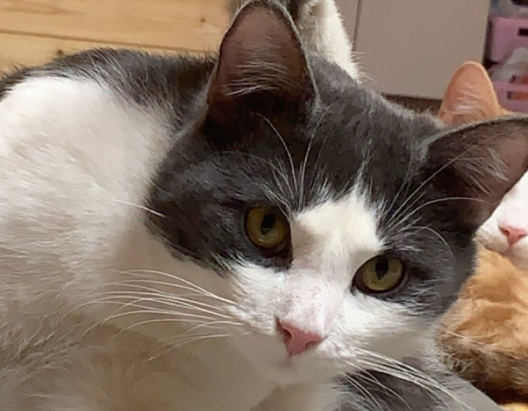
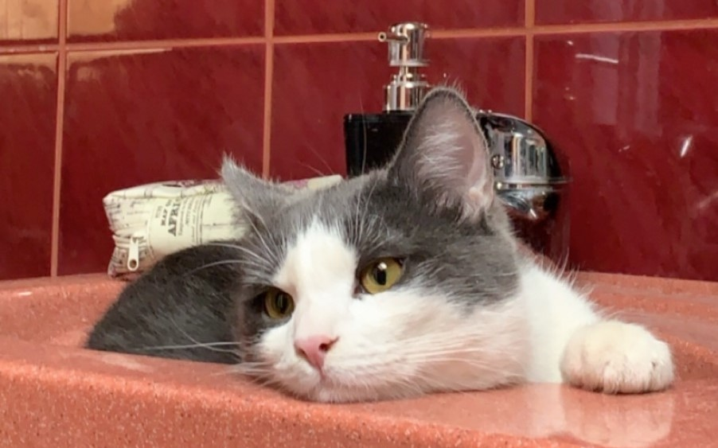

|  | SEBA |
 |
| Ässu | Esilehele | Seba |
Nagu näha on Seba väga laisk kass.
Ta liigub peamiselt vaid siis kui magatud sai, ja peale und on tähelepanu vaja, või siis kui kõht tühjaks läheb.
Talle meeldib ka Ässut kiusata (käpaga ta näos vehkida) ning tema kohta ära varastada.
Kui Ässu kuskil magab, siis ta peaaegu alati hüppab sinna, et Ässut minema ajada.
